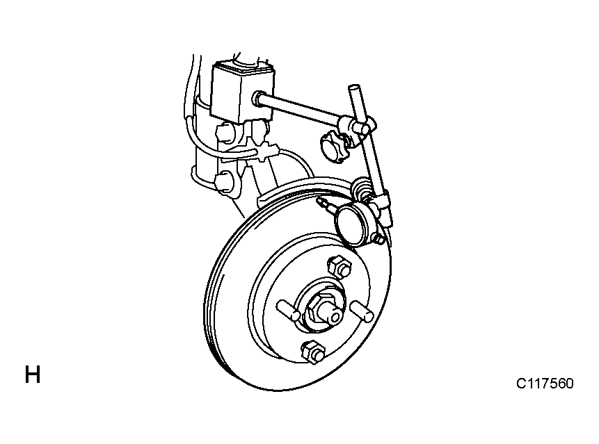

Front Brake Pad, Brake Caliper & Brake Rotor: Installation
HINT:
- Use the same procedures for the LH side and RH side.
- The procedures listed below are for the LH side.
- INSTALL FRONT DISC
- Align the matchmarks and install the disc.
HINT:
When replacing the disc with a new one, select the installation position where the front disc has the minimum runout.
- Align the matchmarks and install the disc.
- CHECK DISC RUNOUT
- Check the bearing play in the axial direction and check the axle hub runout (see ON-VEHICLE INSPECTION ).
- Temporarily install the disc to the hub with the hub nuts.
- Using a dial indicator, measure the disc runout 10.0 mm (0.39 in.) from the outer edge of the disc.
Maximum disc runout: 0.05 mm (0.0020 in.)
If the runout is greater than the maximum, change the installation positions of the disc and axle so that the runout will become minimal.

Courtesy of © TOYOTA, LICENSE AGREEMENT TMS1002If the runout is greater than the maximum even when the installation positions are changed, grind the disc.
If the disc thickness is less than the minimum, replace the disc.
- Remove the 2 hub nuts.
- INSTALL FRONT DISC BRAKE CYLINDER MOUNTING LH
- Install the cylinder mounting with the 2 bolts.
Torque: 88 N*m (900 kgf*cm, 65 ft.*lbf)
- Install the cylinder mounting with the 2 bolts.
- INSTALL FRONT DISC BRAKE DUST BOOT
- Apply lithium soap base glycol grease to the contact surface of the 2 bush dust boots.
- Install the 2 bush dust boots to the cylinder mounting.
- INSTALL FRONT DISC BRAKE CYLINDER SLIDE PIN
- Apply lithium soap base glycol grease to the sliding part and contact surface of the 2 slide pins.
- Install the 2 slide pins to the cylinder mounting.
- INSTALL FRONT DISC BRAKE PAD SUPPORT PLATE
- Install the 2 support plates to the cylinder mounting.
- INSTALL FRONT ANTI SQUEAL SHIM
- Apply disc brake grease to the both sides of each No. 1 shim.
- Install the No. 1 and No. 2 shims to each pad.
- INSTALL FRONT DISC BRAKE PAD
- Install the 2 brake pads to the cylinder mounting.NOTE: There should be no oil or grease on the friction surfaces of the pads and disc.
- Install the 2 brake pads to the cylinder mounting.
- INSTALL FRONT DISC BRAKE CYLINDER SUBASSEMBLY LH
- Install the brake cylinder with the 2 bolts.
Torque: 34 N*m (347 kgf*cm, 25 ft.*lbf)
- Connect the flexible hose with a new gasket and the union bolt.
Torque: 30 N*m (310 kgf*cm, 22 ft.*lbf)
HINT:
Install the flexible hose lock securely in the lock hole in the brake cylinder.
- Install the brake cylinder with the 2 bolts.
- FILL RESERVOIR WITH BRAKE FLUID (See BRAKE FLUID )
- BLEED AIR FROM BRAKE MASTER CYLINDER (See BRAKE FLUID )
- BLEED AIR FROM BRAKE LINE (See BLEEDING )
- CHECK BRAKE FLUID LEVEL IN RESERVOIR (See BLEEDING )
- CHECK FOR BRAKE FLUID LEAKAGE
- INSTALL FRONT WHEEL
Torque: 103 N*m (1,050 kgf*cm, 76 ft.*lbf)